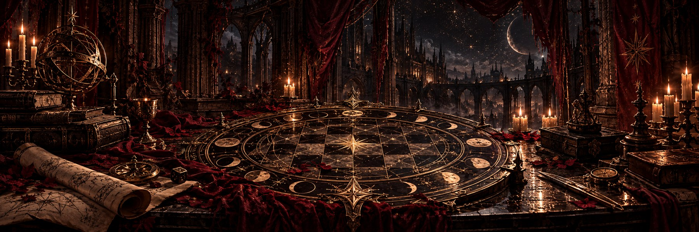
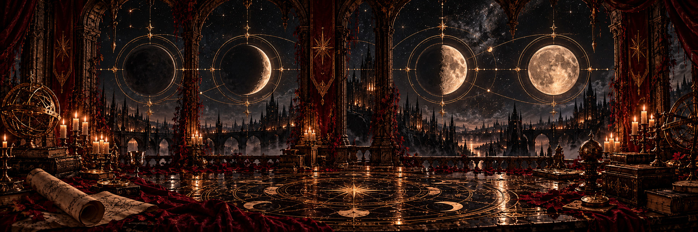
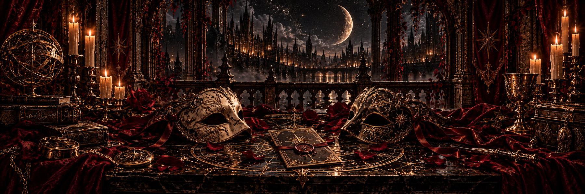
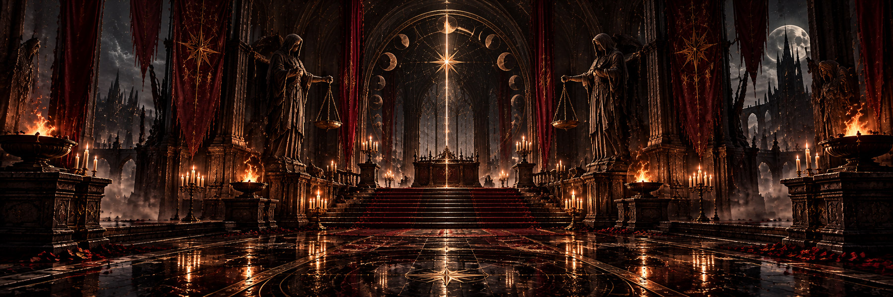
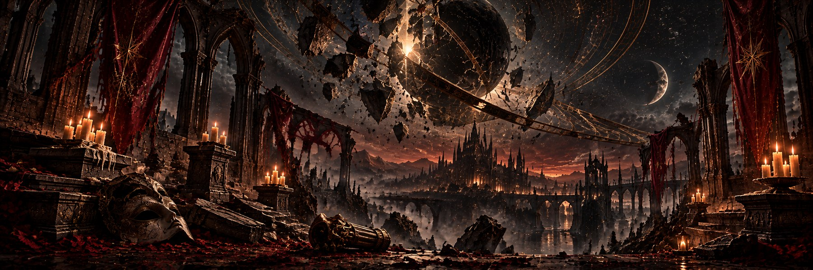
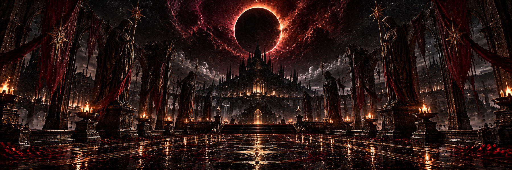

致被命运选中的执棋者：
午夜将至，命运之盘即将苏醒。
传说，世间万物的兴衰、王国的存亡，乃至生与死的界限，都不过是棋盘上的一枚落子。
每逢万圣之夜，十位执棋者便会收到密信，受邀来到这场无人知晓结局的夜宴。
他们各自背负着不可告人的使命。然而，命运从不允许所有人的愿望同时实现。
十位执棋者，五对宿敌。
你知道自己所追求的未来，也知道有一个人注定要将它毁灭。
唯独不知道，那个人此刻正坐在谁的身旁。
或许他正与你谈笑风生。或许她刚刚向你伸出援手。又或许，你早已与自己的宿敌签下了一份契约。
今夜，信任可以被交换，忠诚可以被伪装，甚至命运本身，也能成为交易的筹码。
记住：在命运之盘上，最危险的从来不是落下的棋子，而是执棋的人。
即便是最强大的执棋者，也无法违背命运之盘的古老法则。

命运之盘
The Board of Fate世界的命运凝结于一块 7×7 的棋盘。棋盘的行自上而下编号 1–7，列自左而右编号 1–7。
棋盘之上，存在两种能够改写现实的力量：
每个格子只能容纳一道烙印，已经刻下的命运不可擦除、移动或覆盖。
你可以通过落子改变棋盘，尝试让自己的宿命成为现实。
但请谨记：每一次改变，都可能成全另一位执棋者的野心。

四次命运轮转
The Four Turns命运之盘将在夜宴中开启四轮。四轮分为前后两个阶段，每个阶段包含连续两轮落子。
前两轮为第一阶段，后两轮为第二阶段。
每一轮，所有尚未被放逐的执棋者都将依次获得一次行动机会。你可以选择：
- 在任意空格刻下一枚生之烙印。
- 在任意空格刻下一枚死之烙印。
- 静观命运（Pass）：放弃本次行动，不放置任何烙印。
每轮每人只能行动一次。放弃的机会不能累积或补回。四轮合计，每位执棋者拥有最多四次基础落子机会。
具体轮次与行动顺序，将由守夜人在夜宴中宣布。

宿敌与假面
The Hidden Rivals每位执棋者都拥有一个独一无二的身份、一项秘密使命，以及一位命中注定的宿敌。你的宿敌与你追求着完全相反的结局。
你知道宿敌的称号和目标，却不知道谁隐藏在那副假面之下。任何人都可能是敌人，也可能成为暂时的盟友。
你可以观察、试探、谈判、欺骗，甚至故意让别人误解你的真实意图。但你必须遵守一条铁律：
不得展示身份密信，也不得直接公开或明确说出自己的真实身份与秘密胜利条件。
其余的一切，交由你的智慧决定。

揭面审判
The Accusation如果你认为自己已经识破了宿敌的真实身份，可以向守夜人发起一次「揭面审判」。
从夜宴开始，直到最终封盘之前，任何尚未被放逐的执棋者都可以随时发起指认。你必须明确指出，你认为谁是自己的宿敌。守夜人将核验双方身份。
指认正确
你将立刻赢得与宿敌的命运对决。宿敌被放逐，失去后续落子与指认资格。而你，可以继续影响这个世界。
指认错误
你将因冒犯命运而被放逐，立即退出棋盘游戏，失去后续行动与指认资格。你的真正宿敌仍需在最终封盘时达成自己的棋盘条件，也可能失败。因此，同一对宿敌可能皆败。
每位执棋者至多有一次发起指认的机会。你可以选择始终保持沉默，但有时，迟疑比鲁莽更加致命。
所有已放置的烙印都将永久留在棋盘之上，即使其主人已经被放逐。

命运碎片
Fragments of Fate古老的传说并没有记载命运之盘的全部力量。在夜宴的歌声、欢笑、胜利，以及一些难以解释的荒唐行为中，少数执棋者将获得珍贵的命运碎片。
每枚命运碎片都可以在最终封盘前，为持有它的执棋者换取一次额外行动。更重要的是：命运碎片可以交易。
你可以赠予、交换，或者通过任何双方自愿接受的条件进行交易。契约可以缔结，承诺也可能被背叛。但在交易中，没人有义务告诉你全部真相。
只有仍拥有执棋资格的人可以使用命运碎片。被放逐者尚未使用的碎片将失去效力。

午夜审判
The Final Judgment当四轮命运轮转结束，守夜人将宣布最后的机会。所有尚未被放逐的执棋者，可以使用持有的命运碎片，完成最后的交易、落子与宿敌指认。
随后，守夜人将正式宣布：
从这一刻起，所有交易、落子和指认都将停止。十封密信背后的真相终于揭晓。
对于尚未通过揭面审判决出胜负的宿敌，命运之盘的最终状态将决定谁实现了自己的使命。五场宿命之争，将各自迎来结局。
有人将改写历史，有人将坠入深渊。但还有一些故事，或许连命运本身都未曾预料。